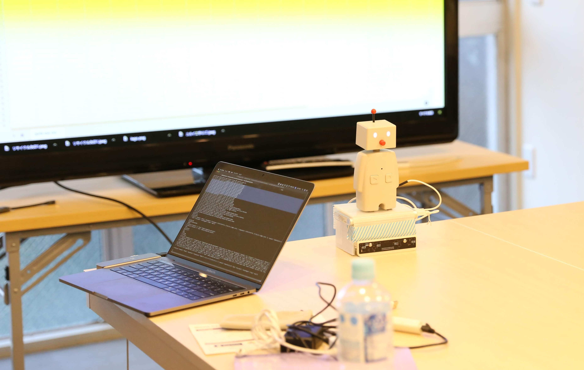
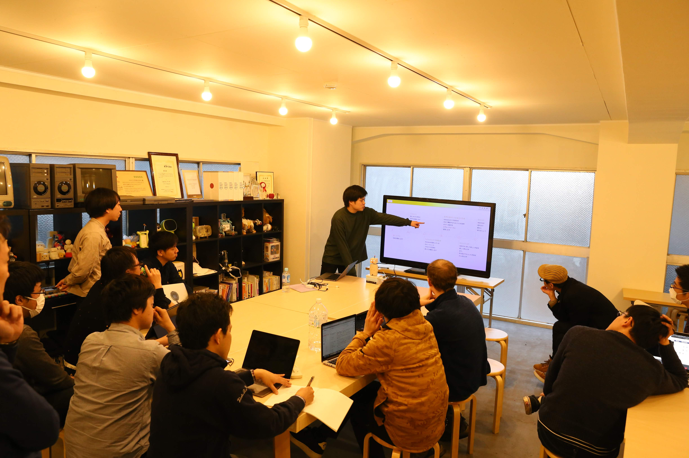
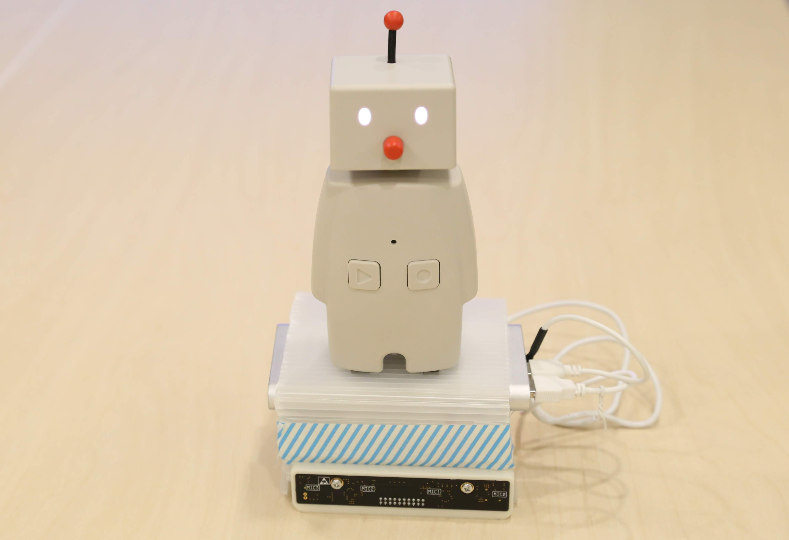

TALCCO~対話できるBOCCO~

担当
全部
使用技術
GAS、python、AdobeXD、Raspberry_pi3、スプレッドシート、Codama
全部
使用技術
GAS、python、AdobeXD、Raspberry_pi3、スプレッドシート、Codama
コンセプト

構成
デモ動画 → Vimeo
反省点
- 意外とdocomoの自然対話APIが余り賢くない
- ラグがすごすぎる（10秒のラグなんて人前でデモは本来できないレベル）
- 首だけではなく装置の下にモータをつけて体ごと向けることができればさらにインパクトが
- BOCCOもQooboも可愛かった

感想
形あるものができ、最初の構想がほぼ実現でき、自分の思ったようにスケジュールが進んだところは自分でも評価できる点だと思う。
発表スライド：SpeakerDeck
記事：Qiita
ソースコード：Github
発表スライド：SpeakerDeck
記事：Qiita
ソースコード：Github